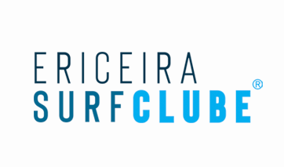
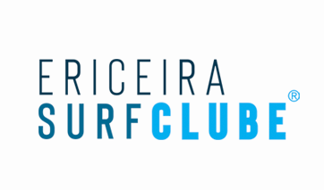

Pedra Branca
The first wave that we find right in front of the Camping of Ericeira is the Stone Branca.Located at the southern tip of Empa Beach, and is named because of a rock submerged, with a lighter tone than the others, located in the zone where waves are normally Caught. It is a very fast left of reef bottom that receives ripples from the quadrant OS to the W / NO quadrant. Due to the shallow bench of the reef that is exposed during the empty tide, Is usually surfed from mid-tide to full tide. Regular and dangerous this wave Is characterized by a zone of rapid starts, followed by a pipe to the inside.